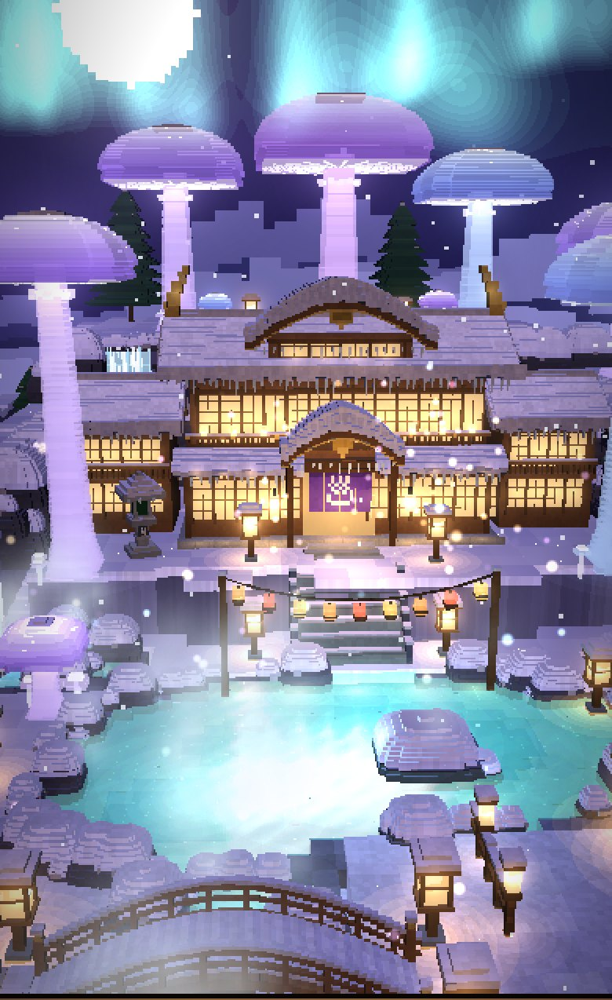
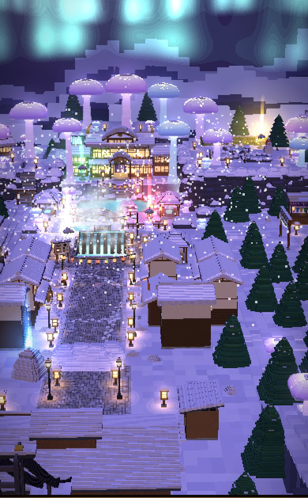
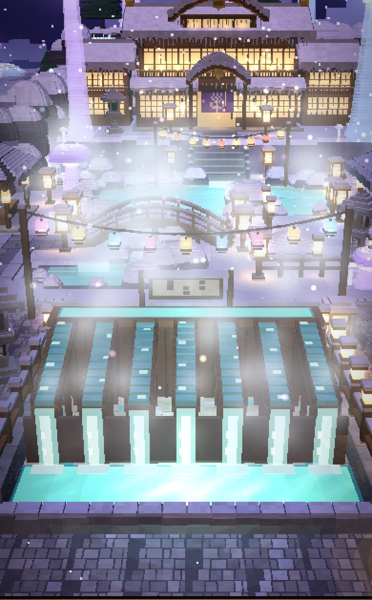
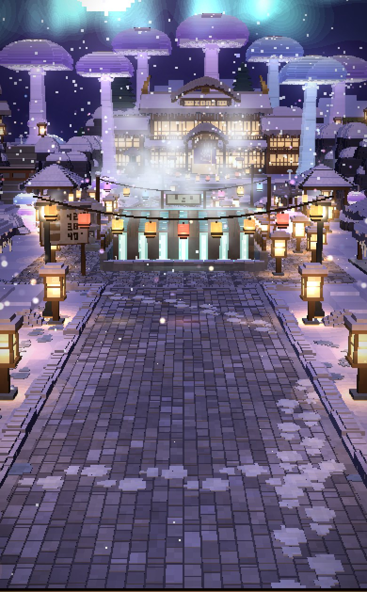
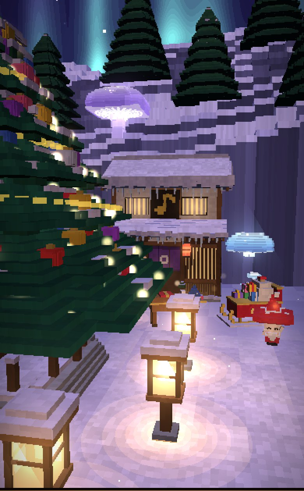
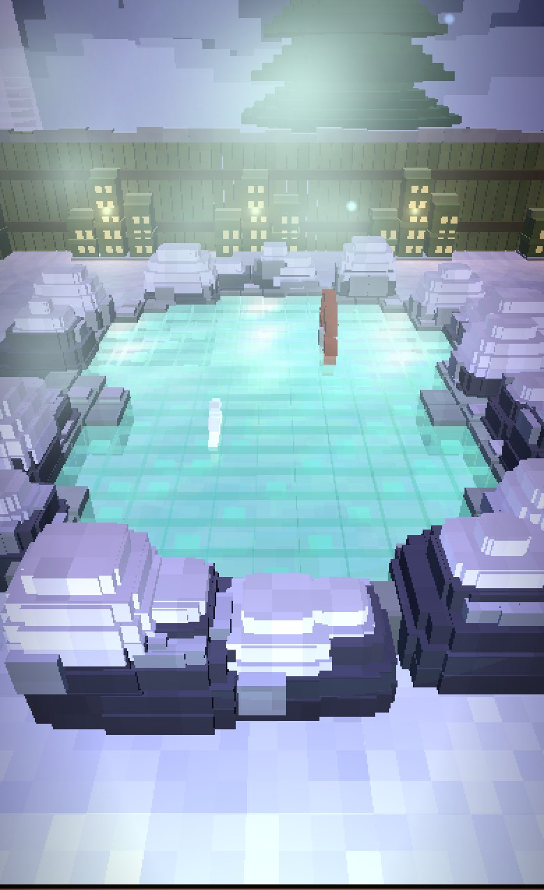
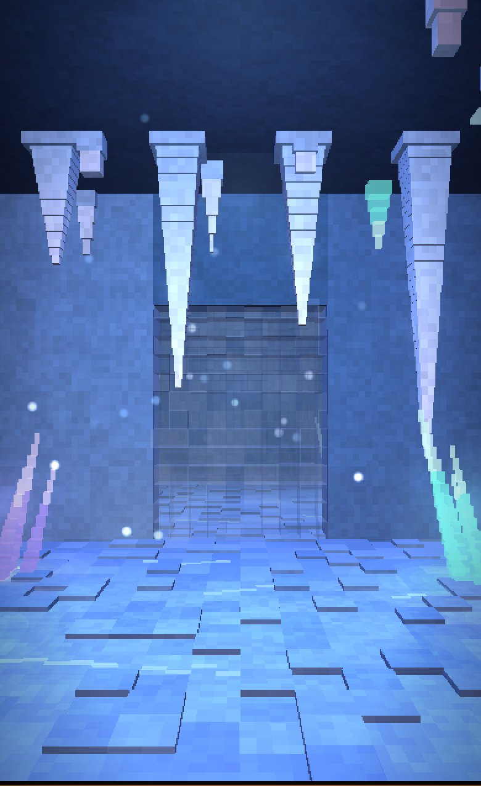

Escape Room Game: Poco's Door — Stage 11 “Snow-Glow Mushroom Hot Springs”
Version 1.1.0 (planned Dec 5, 2026) · Free update · Japanese / English / Traditional Chinese · iPhone
脱出ゲーム ポコと ひみつの とびら — ステージ11「雪あかりのキノコ温泉」
- A snowy Japanese hot-spring town on a winter night: nine connected areas, a 25-step puzzle chain, 3-level hints.
- 10 new winter mushroom friends and 4 hidden Pocos to collect; ambient sounds of springs and snow.
- App Store: apps.apple.com/app/id6821250309

湯の里と大きな旅館

山の展望台から見下ろす温泉街
見つけた飾りでかざるクリスマスの市のツリー

湯けむりの湯畑

灯籠の並ぶ店の通りと雪の足あと

サンタきのこ・そり・トナカイきのこ

雪見の露天風呂

凍った氷の洞窟
In-game screenshots (iPhone, portrait). © 2026 Shumpei Chiba